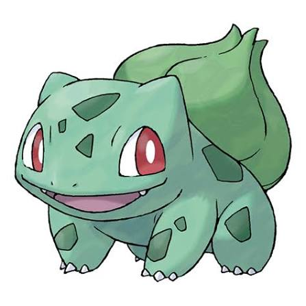
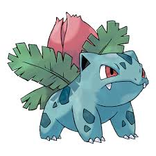
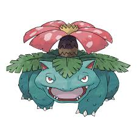
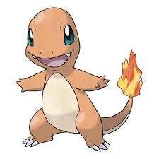

Bulbasaur
Nº #001
Tipo:


Bulbasaur é um Pokémon do tipo Grama/Veneno que possui uma semente plantada em suas costas desde o nascimento. Essa semente cresce e se desenvolve junto com ele, absorvendo energia da luz solar. É conhecido por sua natureza amigável e por sua capacidade de utilizar técnicas baseadas em plantas.
Ivysaur
Nº #002
Tipo:

Ivysaur possui uma grande planta crescendo em suas costas. Conforme a planta floresce, seu corpo se torna mais forte e preparado para a próxima evolução.
Venusaur
Nº #003
Tipo:

Venusaur possui uma enorme flor em suas costas, que absorve energia da luz solar. É a forma final da linha evolutiva de Bulbasaur.
charmander
Nº #004
Tipo:


Venusaur possui uma enorme flor em suas costas, que absorve energia da luz solar. É a forma final da linha evolutiva de Bulbasaur.